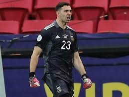

Neymar Jr
Lionel Andrés Messi is an Argentine professional footballer who plays as a forward or an attacking midfielder and captains the Argentina national team. He is currently a free agent,

Messi
Lionel Andrés Messi is an Argentine professional footballer who plays as a forward or an attacking midfielder and captains the Argentina national team. He is currently a free agent,

Cristiano Ronaldo
Lionel Andrés Messi is an Argentine professional footballer who plays as a forward or an attacking midfielder and captains the Argentina national team. He is currently a free agent,

Paulo Dybala
Lionel Andrés Messi is an Argentine professional footballer who plays as a forward or an attacking midfielder and captains the Argentina national team. He is currently a free agent,

Mesut Ozil
Lionel Andrés Messi is an Argentine professional footballer who plays as a forward or an attacking midfielder and captains the Argentina national team. He is currently a free agent,

Mauro Icardi
Lionel Andrés Messi is an Argentine professional footballer who plays as a forward or an attacking midfielder and captains the Argentina national team. He is currently a free agent,

Di Maria
Lionel Andrés Messi is an Argentine professional footballer who plays as a forward or an attacking midfielder and captains the Argentina national team. He is currently a free agent,

Kylian Mbappe
Lionel Andrés Messi is an Argentine professional footballer who plays as a forward or an attacking midfielder and captains the Argentina national team. He is currently a free agent,

Mohamed Salah
Lionel Andrés Messi is an Argentine professional footballer who plays as a forward or an attacking midfielder and captains the Argentina national team. He is currently a free agent,

harry Kane
Lionel Andrés Messi is an Argentine professional footballer who plays as a forward or an attacking midfielder and captains the Argentina national team. He is currently a free agent,

Kevin Di bruyne
Lionel Andrés Messi is an Argentine professional footballer who plays as a forward or an attacking midfielder and captains the Argentina national team. He is currently a free agent,

Philippe Coutinho
Lionel Andrés Messi is an Argentine professional footballer who plays as a forward or an attacking midfielder and captains the Argentina national team. He is currently a free agent,
Top scorer

Best Goalkeeper

Top Assist
All Highlights Copa America 2021
Copa América or CONMEBOL Copa América, known until 1975 as the South American Football Championship, is the main men's football tournament contested among national teams from South America.